Coloriez en noir les cases marquées d'un rond, et laissez les autres en blanc.
Cliquez d'abord sur le bouton "copier les cases noires", déplacez ensuite le motif copié avec les flèches, puis collez ce motif une ou plusieurs fois, avant d'utiliser à nouveau le bouton copier.
Utilisez le bouton coller au maximum 7 fois.
|
|
On copie tout. 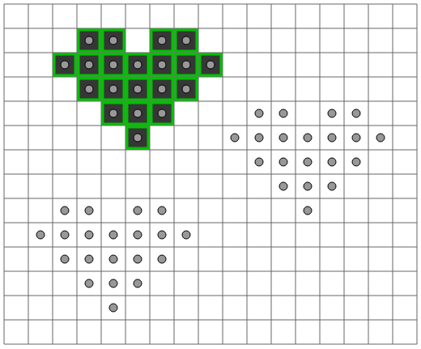 |
On déplace la cible. 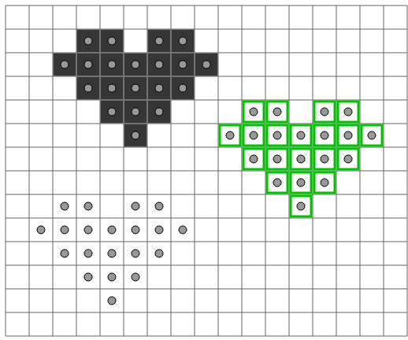 |
On colle. 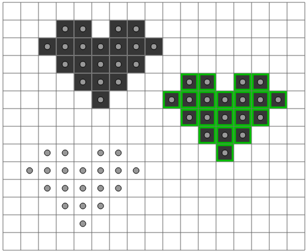 |
|
On redéplace la cible. 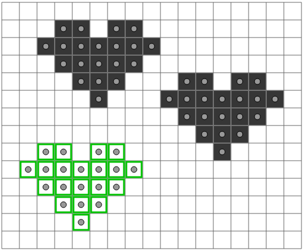 |
Et on colle à nouveau. 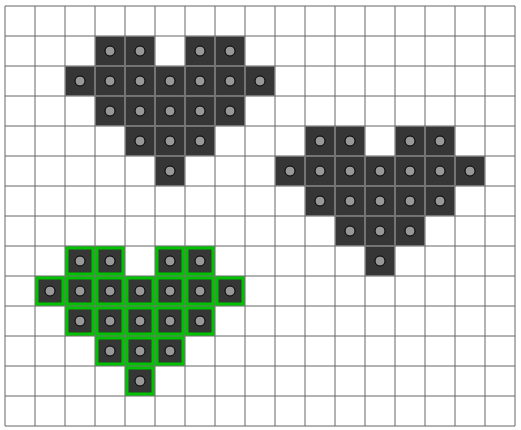 |
Pour faire une opération de copier-coller, on appuie sur "copier les cases noires", puis on déplace la cible avec les flèches, puis on appuie sur coller. Les étapes suivantes de copier-coller permettent d'obtenir le résultat souhaité.
|
On copie-colle une case. 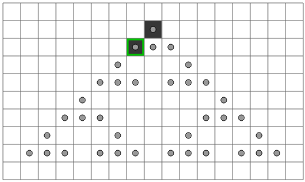 |
Puis une autre. 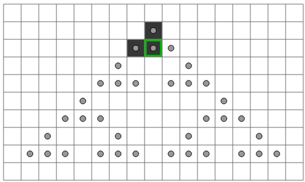 |
Et encore une autre. 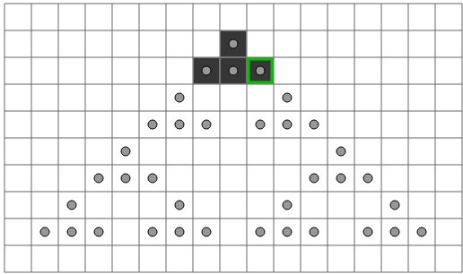 |
|
On copie-colle maintenant 4 cases d'un coup. 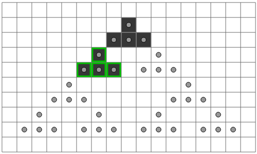 |
Puis on colle le même paquet de 4 une seconde fois. 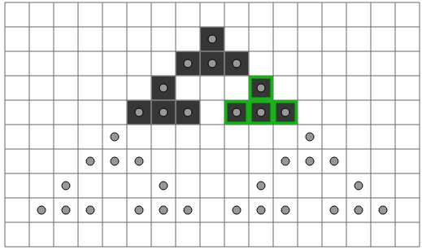 |
|
|
Enfin on copie-colle un gros paquet de 12 cases. 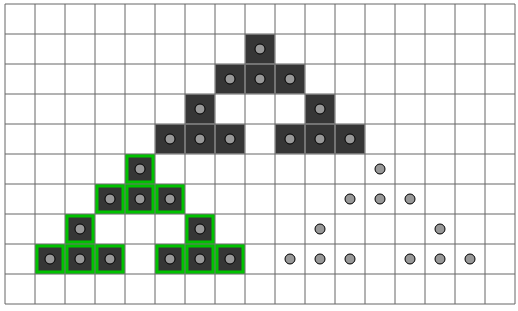 |
Puis encore une dernière fois pour terminer. 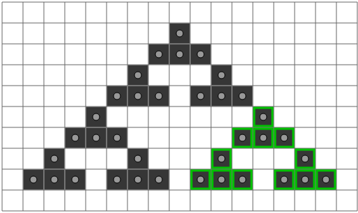 |
|
On part de l'état initial. 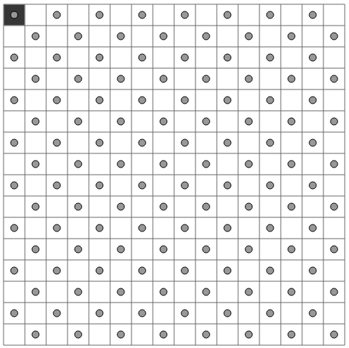 |
On copie-colle d'abord une case. 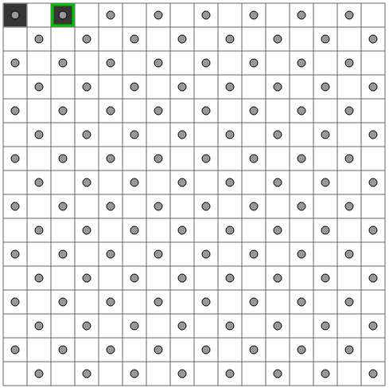 |
Puis deux cases d'un coup. 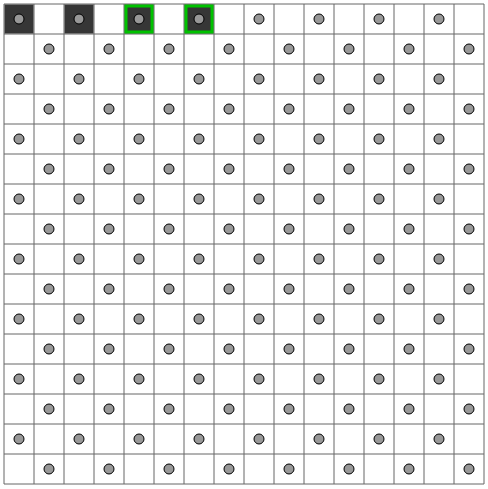 |
|
On copie-colle ensuite 4 cases d'un coup, terminant une ligne. 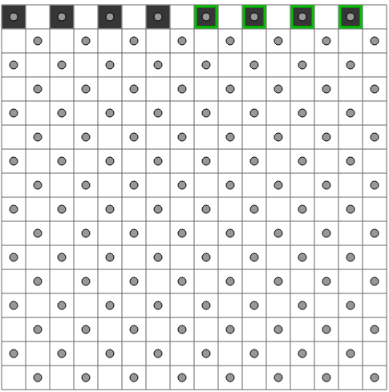 |
On répète maintenant le même processus verticalement. 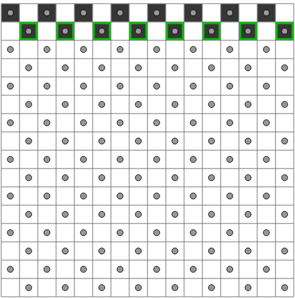 |
En doublant à chaque fois le nombre de cases collées. 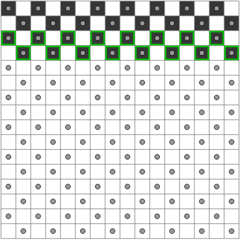 |
|
À l'avant dernière étape, on a effectué la moitié du travail. 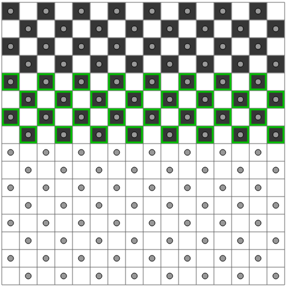 |
Un dernier copier-coller de toutes les cases, et c'est fini ! 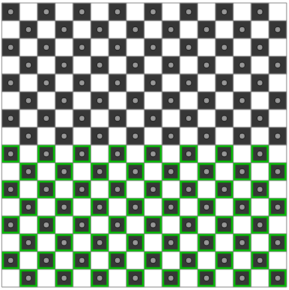 |
Remarque : il y avait d'autres manières de procéder, on pouvait par exemple commencer par remplir la première colonne, on bien construire des carrés de plus en plus grands en alternant une croissance sur les lignes et une croissance sur les colonnes.
La version difficile de ce sujet illustre une technique très utile en algorithmique, par exemple pour calculer des grands nombres, dénommée exponentiation rapide. L'idée est la suivante : si l'on sait facilement doubler la taille d'un objet (que ce soit un nombre, ou une image, etc ...), alors il y a une manière de construire très rapidement un très grand objet. En partant d'un objet initial, on va doubler à chaque fois la taille du dernier objet que l'on a obtenu.
Par exemple, dans le cas des nombres, si l'on sait multiplier par deux facilement, en partant de 1 on peut calculer 2, puis 4, puis 8, puis 16, puis 32, puis 64, etc... En seulement 10 opérations, on va dépasser 1000, et en seulement 30 opérations on va dépasser 1 milliard !